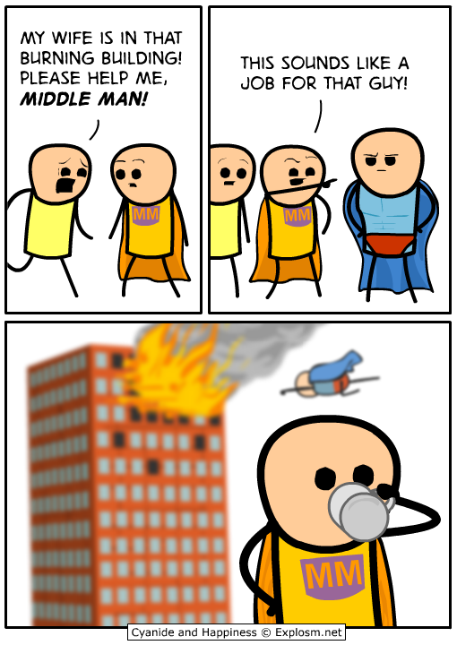
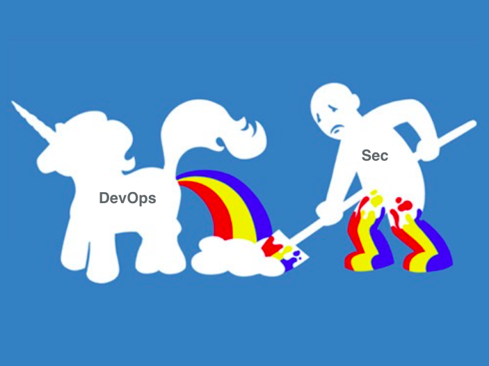

OPSDEV
whoami
- Pieter Lange
- IT infrastructure technician
- p.lange@fullstaq.com
- github.com/pieterlange
- eat, sleep,
 , repeat
, repeat - @kuberpieters

Quick poll
What is your profession?

- Developer
- Operations
- Quality assurance
- Management/support
- "Other"
Who can be called for production issues?
- Right now?

What is OPS?
- baby don't hurt me
- don't hurt me
- no more

Historical context
Observations and stereotypes
Developers
- Artists & makers
- New&shiney over old and known
- Closer to business drivers
- Experiment & iterate
- "We CREATE the value in the business!"
Operations

- Department of "no"
- Slower iterations, "lazy"
- Interrupt driven/responsive
- Conservative AF or chronic martyrs
- "We PROTECT the value in the business!"
How did we end up here
- Increasing complexity
- Specialization
- Things are changing fastand are speeding up
Not yesterdays' OPS anymore
- Infra as code
- Puppet, Chef, Ansible, Terraform, Docker, ...
- CI/CD
- "OPS has learned how to code"
Developers
- Bear production responsibility
- Restructured apps to fit new infra (12factor, serverless)
- Do their own release management
- "Product development has learned how to ops?"
We still have very different contexts
- Ops: aggregates
- Dev: specifics
The ops things affecting developers
Upgrades
- Rolling
- Schema management
- Static assets?
- Verify correctness
Correctness?!
- RED, USE
- "But i ran my tests"
- Observability
Errors

Rails logging is ..
problematic
Started GET "/" for 127.0.0.1 at 2012-03-10 14:28:14 +0100
Processing by HomeController#index as HTML
Rendered text template within layouts/application (0.0ms)
Rendered layouts/_assets.html.erb (2.0ms)
Rendered layouts/_top.html.erb (2.6ms)
Rendered layouts/_about.html.erb (0.3ms)
Rendered layouts/_google_analytics.html.erb (0.4ms)
Completed 200 OK in 79ms (Views: 78.8ms | ActiveRecord: 0.0ms)
Use structured logs
- lograge
- Taming Rails' Default Request Logging
{
"method": "GET",
"path": "/jobs/833552.json",
"format": "json",
"controller": "JobsController",
"action": "show",
"status": 200,
"duration": 58.33,
"view": 40.43,
"db": 15.26
}
Expose metrics
- For platform automation
- For service level indicators
- So ops doesn't have to do it at the network level
ex: prometheus client_ruby
CI/CD
Now for some bold claims
- ITIL wasn't entirely useless
- SDLC
- Asset management/CMDB
- Supply chain management is going to !@#% us up
- Product selection is hard
- KISS
- Trust is created by giving out trust yourself
and NIH is stall rampant in IT
thank you
Ask me about kubernietes.nl